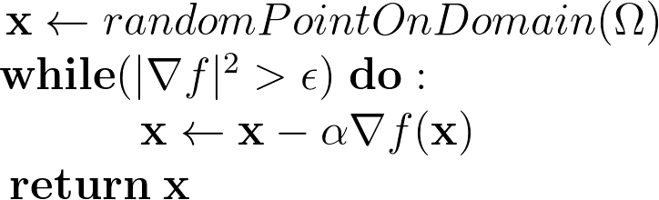

GradientDescend
Gradient Descend and Optimization
As always let's start with a problem. Here we have an optimization problem, but what is an optimization problem? Well it is the problem where you have lots of choices and you want to pick one of the choices such that it minimizes/maximizes a certain criteria. More formally we have a function $f: \Omega \rightarrow \mathbb{R}$ which is the criteria function and $\Omega$ is the set of choices, which could be a set of things(chairs, tables , cats , dogs, ...) or could be $\mathbb{R}^{n}$ for some $n \in \mathbb{N}$.
To explain gradient descend I will just consider smooth function(which means that $f$ has second derivatives) over $\mathbb{R}^{2}$. Also I will just consider minimization problems, as we will see ahead maximization problems are similar to solve.
Just to recall we want to find a $\mathbf{x}^{*}\in \mathbb{R}^{2}$ such that it minimizes $f:\mathbb{R}^{2}\rightarrow \mathbb{R}$

figure 1. function of two variables with a global minimum
To solve this problem we could start with a random guess $\mathbf{x_{0}} \in \mathbb{R}^{2}$, then we could choose a direction in which the function decreases and follow that direction, next repeat the process and eventually stop at a minimum. But how to choose the direction, and when to stop? As you can see this is a greedy algorithm, because it always chooses the best direction to go locally, so how to choose this direction locally?
 |
| fig2. tangent plane approximating surface locally |
To find such direction first we would find the tangent plane of the function at $\mathbf{x_{0}}$. Which is the graph of the function
$p:\mathbb{R}^{2}\rightarrow\mathbb{R}$.
$$p(\mathbf{x}) = f(\mathbf{x_{0}}) + \frac{\partial f}{\partial x}(\mathbf{x_{0}}) (x - x_{0}) + \frac{\partial f}{\partial y}(\mathbf{x_{0}}) (y - y_{0}) $$
$$p(\mathbf{x}) = f(\mathbf{x_{0}}) + \mathbf{\nabla} f (\mathbf{x_{0}}) \cdot \mathbf{ (x - x_{0})} $$
(For more about $\mathbf{\nabla} f = \begin{pmatrix}
\frac{\partial f}{\partial x}\\
\frac{\partial f}{\partial y}
\end{pmatrix}$ check MIT Multivariate calculus course )
$$p(\mathbf{x}) = f(\mathbf{x_{0}}) + \mathbf{\nabla} f (\mathbf{x_{0}}) \cdot \mathbf{ (x - x_{0})} $$
(For more about $\mathbf{\nabla} f = \begin{pmatrix}
\frac{\partial f}{\partial x}\\
\frac{\partial f}{\partial y}
\end{pmatrix}$ check MIT Multivariate calculus course )
Note that $\mathbf{x_{0}} = \begin{pmatrix}x_{0}\\ y_{0} \end{pmatrix}$.
Then lets see which direction has lowest gradient in the tangent plane, to see that I define $$l(\mathbf{v}) = p(\mathbf{x_{0}} + \mathbf{v})$$
$$\Leftrightarrow l(\mathbf{v}) = f(\mathbf{x_{0}}) + \mathbf{\nabla} f (\mathbf{x_{0}}) \cdot \mathbf{v}$$
Hence we must find $$\underset{\mathbf{v}}{\operatorname{argmin}} l(\mathbf{v}) , \;\;\text{such that }|\mathbf{v}|^{2} \text{ is finite} \;\;\;\; (1)$$
The purpose of constraint is for $l(\mathbf{v})$ to have a minimum. It is clear that in order to minimize (1) we must choose $\mathbf{v}$ that minimizes $ \mathbf{\nabla }f \cdot \mathbf{v}$ this suggests that $\mathbf{v}$ must be parallel with symmetric direction (see dot product article) , that is $\mathbf{v} = - \lambda \mathbf{\nabla }f $.
The other problem was when to stop, when do I know that I am in a local max/min? This is simple, in a max/min the tangent plane is parallel to the x,y hence $\mathbf{\nabla }f = \begin{pmatrix}0\\0 \end{pmatrix}$. Now we have a vector that points to decreasing values of $f$ and turns $\mathbf{0}$ at a minimum, and that vector is $\mathbf{\nabla }f$.

Note that $\epsilon > 0$ close to zero and $0 < \alpha \leq 1$. Also note that as $\mathbf{x_{i}}$ moves towards local min the gradient tends to $\mathbf{0}$. It is important to see that $f(\mathbf{x_{i+1}}) = f(\mathbf{x_{i}}) - \alpha |\mathbf{\nabla }f(\mathbf{x_{i}})|^{2}$ which means $f(\mathbf{x_{i+1}}) < f(\mathbf{x_{i}}) $ since $- \alpha |\mathbf{\nabla }f(\mathbf{x_{i}})|^{2} \leq 0$, which somehow proofs that our algorithm does get to a local minima.
Basically the algorithm just computes equation: $$\mathbf{x_{i+1}} = \mathbf{x_{i}} - \alpha \mathbf{\nabla }f(\mathbf{x_{i}})$$
but this is just the euler step of a differential equation. Then the gradient descent algorithm corresponds to solving $$\mathbf{\dot x(t)} = -\mathbf{\nabla }f(\mathbf{x}(t)) \;\;\;\; (2)$$ And equation (2) just describes a vector field over the domain which points always to the min. Note that to find the max of a function you just invert the sign of the gradient.
Final remark:
Gradient descend algorithm is a good algorithm for local optimization. The only way to solve a global optimization problem with gradient descend is when the problem has just one minima, or you must run lots of gradient descends with random initial conditions and choose the one that best minimizes the function (this does not guarantee to find the global minima).
but this is just the euler step of a differential equation. Then the gradient descent algorithm corresponds to solving $$\mathbf{\dot x(t)} = -\mathbf{\nabla }f(\mathbf{x}(t)) \;\;\;\; (2)$$ And equation (2) just describes a vector field over the domain which points always to the min. Note that to find the max of a function you just invert the sign of the gradient.
Final remark:
Gradient descend algorithm is a good algorithm for local optimization. The only way to solve a global optimization problem with gradient descend is when the problem has just one minima, or you must run lots of gradient descends with random initial conditions and choose the one that best minimizes the function (this does not guarantee to find the global minima).
Video describing gradient descend: